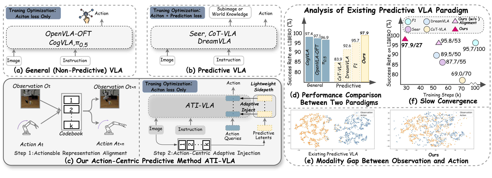

Stage 1Actionable Representation Alignment

* Corresponding authors: Rui Shao and Zitong Yu
NeurIPS 2026
Predictive Vision–Language–Action (VLA) models aim to improve robotic manipulation via future observation or world dynamics forecasting. However, existing approaches often fail to realize this potential and underperform direct action prediction models. We argue that these limitations stem from modality misalignment between observations and actions, together with joint optimization conflicts that drive learning away from an action-centric objective. To this end, we introduce ATI-VLA, an Action-Centric Predictive Vision–Language–Action framework via Actionable Alignment Then Adaptive Injection. Specifically, it follows a two-step design: 1) Actionable Representation Alignment via a Shared Codebook. It aligns predictive observation and action representations by mapping both modalities into a shared discrete latent space via a unified codebook, making predictive observation latents readily usable for action generation and mitigating modality misalignment. 2) Action-Centric Adaptive Injection of Predictive Latents. Building upon this, it then injects predictive observation latents into action decoding as explicit predictive priors via a lightweight adaptive side-path, enabling adaptive predictive guidance under a single action-centric objective. Extensive experiments on both simulation and real-world robotic tasks demonstrate that ATI-VLA achieves state-of-the-art performance with faster convergence.

ATI-VLA follows an align-then-inject design: first learn action-grounded predictive representations, then use them to guide action generation under a single action objective.

We evaluate ATI-VLA on LIBERO, RoboTwin 2.0, and real-world bimanual manipulation with Galaxea R1 Lite and AgileX Cobot Magic.

Scroll to view the full table, or tap to open the image.

Scroll to view the full table, or tap to open the image.

Scroll to view the full table, or tap to open the image.
Scroll to view all four plots, or tap to open the image.
Scroll to view the full table, or tap to open the image.
Examples of long-horizon bimanual manipulation with ATI-VLA.
ATI-VLA addresses the observation–action modality gap and joint optimization conflicts in predictive VLA through an align-then-inject framework. A shared codebook learns action-grounded predictive representations, which are then adaptively injected into action decoding under a single action objective. Experiments across simulation benchmarks and two real-world platforms demonstrate improved task performance and faster convergence.